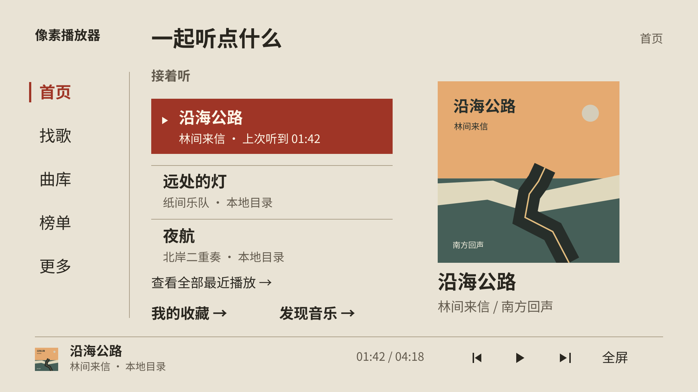
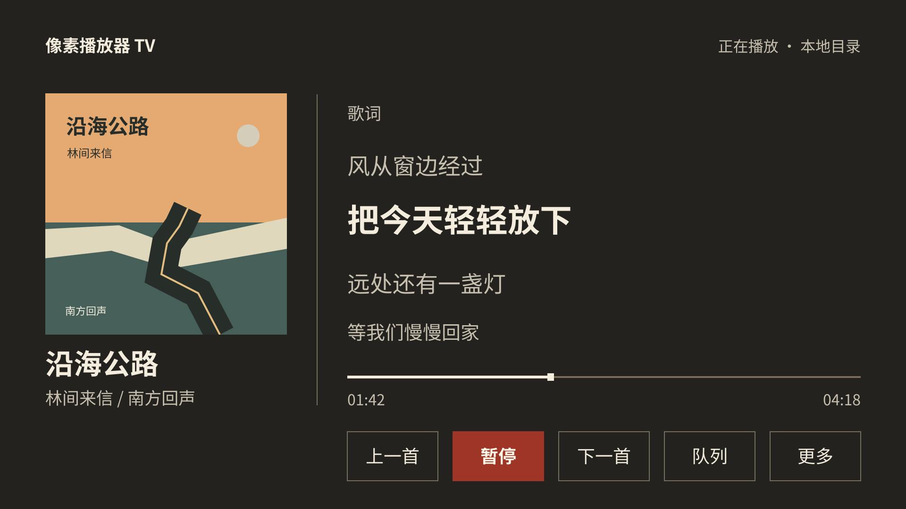
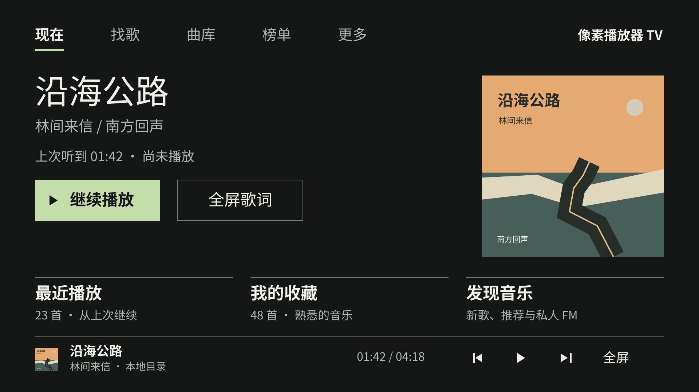
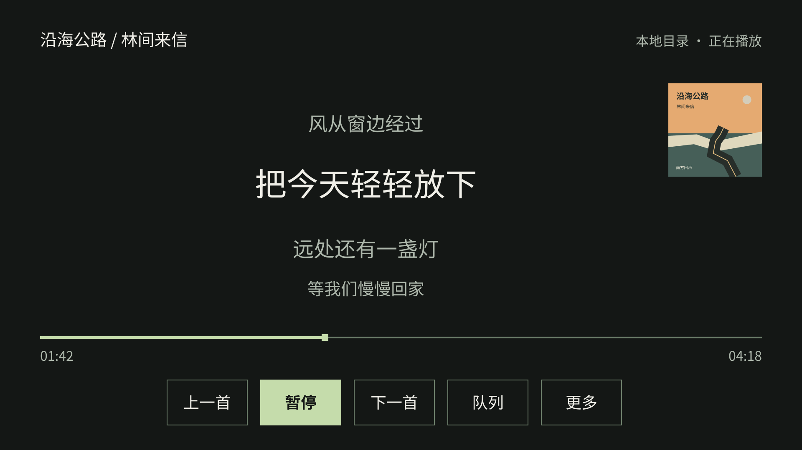
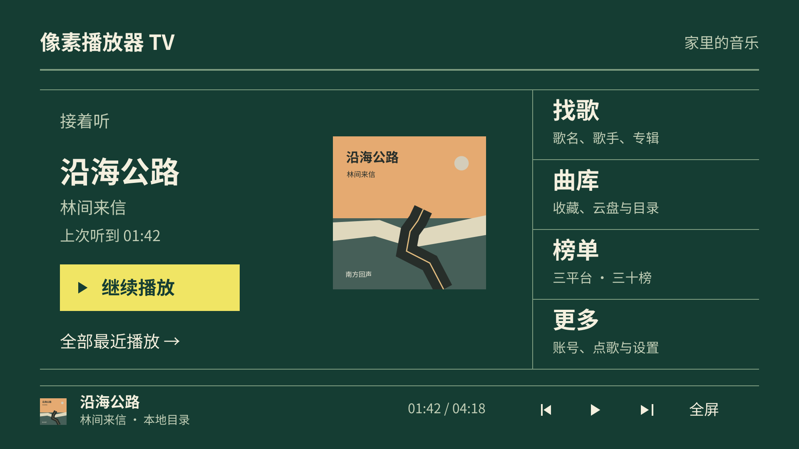

像素播放器 TV · 2026-11-11 · 设计评审稿
为家人共用与遥控器操作设计。六张图均为 1920×1080 概念稿，含同一组虚构曲目和原创演示封面；不是设备截图，也不连接真实音乐服务。
栏目固定在左，音乐像目录一样清楚展开。
适合优先解决“简单易找”；需进一步验证暖底的夜间亮度。


当前歌曲与歌词占据横向空场，找歌发生在幕间。
适合远处看歌词与持续听歌；首屏推荐数量较少。


四个目的地固定占位，用硬网格建立空间记忆。
适合记住入口位置；需控制大色块与资料密度。
